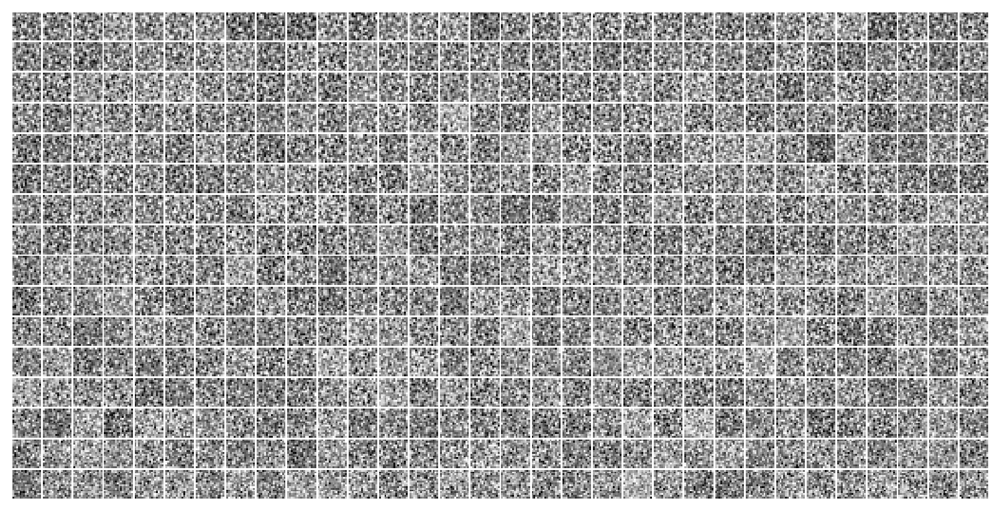
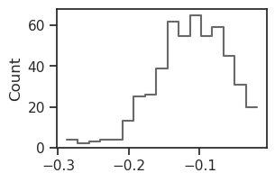
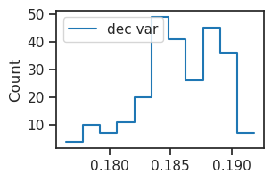
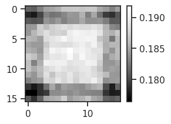
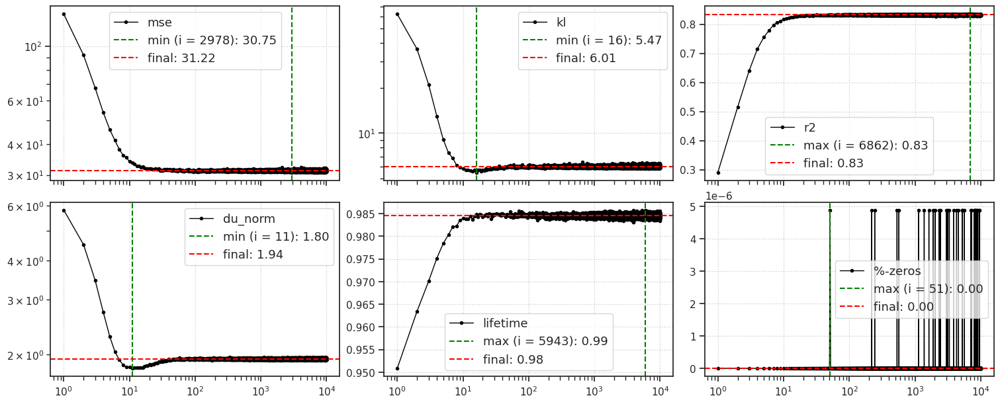
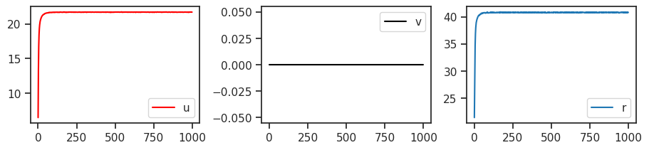

(23) gaussian: (16, 4.0)#
project = iP-VAE, host = chewie, device = cuda:0
Motivation:
Show code cell source
# HIDE CODE
import os, sys
from IPython.display import display
# tmp & extras dir
git_dir = os.path.join(os.environ['HOME'], 'Dropbox/git')
extras_dir = os.path.join(git_dir, 'jb-progress-2025/_extras')
fig_base_dir = os.path.join(git_dir, 'jb-progress-2025/figs')
tmp_dir = os.path.join(git_dir, 'jb-progress-2025/tmp')
# GitHub
sys.path.insert(0, os.path.join(git_dir, '_IterativeVAE'))
from figures.analysis import plot_convergence
from figures.imgs import plot_weights
from figures.fighelper import *
from main.train import *
# warnings, tqdm, & style
warnings.filterwarnings('ignore', category=DeprecationWarning)
warnings.filterwarnings('ignore', category=FutureWarning)
warnings.filterwarnings('ignore', category=UserWarning)
from rich.jupyter import print
%matplotlib inline
set_style()
device_idx = 0
device = f'cuda:{device_idx}'
print(f"device: {device} ——— host: {os.uname().nodename}")
device: cuda:0 ——— host: chewie
Trainer#
model_type = 'gaussian'
cfg_vae, cfg_tr = default_configs(model_type, 'vH16', 'grad|lin')
cfg_vae['seq_len'] = 16
cfg_tr['kl_beta'] = 4.0
cfg_vae['clamp_u'] = 3.0
cfg_vae['track_stats'] = True
tr = Trainer(
model=MODEL_CLASSES[model_type](CFG_CLASSES[model_type](**cfg_vae)),
cfg=ConfigTrain(**cfg_tr),
device=device,
)
tr.model.print()
print(f"{tr.model.cfg.name()}\n{tr.cfg.name()}_({tr.model.timestamp})\n")
tr.show_schedules()
+-------------+------------+ | Module Name | Num Params | +-------------+------------+ | IGVAE | 132.9 K | | ——— | ——— | | layer | 132.9 K | +-------------+------------+
gaussian_vH16_t-16_z-[512]_cl-3,5_<grad|lin> b200-ep300-lr(0.002)_beta(4:0.1)_gr(500)_(2025_02_23,22:33)

print(tr.model.layer)
# print(tr.model.layer.n_exp)
GaussianLayer(input_dim=256, latent_dim=512, temperature=1, beta_inner=1, eps=1)
tuple(llr.exp() for llr in tr.model.layer.log_lr)
(tensor([1.], device='cuda:0', grad_fn=<ExpBackward0>),
tensor([1.], device='cuda:0', grad_fn=<ExpBackward0>))
tr.train()
epoch # 300, avg loss: 199.331616: 100%|████| 300/300 [1:53:09<00:00, 22.63s/it]
tuple(llr.exp() for llr in tr.model.layer.log_lr)
(tensor([0.5354], device='cuda:0', grad_fn=<ExpBackward0>),
tensor([0.1802], device='cuda:0', grad_fn=<ExpBackward0>))
u0 = tonp(tr.model.layer.u_init[0].squeeze())
u1 = tonp(tr.model.layer.u_init[1].squeeze())
tr.model.show(order=np.argsort(u1));

histplot(u0, color='dimgrey');

bias = tonp(tr.model.layer.log_bias.squeeze().exp())
bias
array([0.02150587, 0.02173449, 0.02059549, 0.02178442, 0.02110453,
0.02170379, 0.02214829, 0.02182993, 0.02024766, 0.02170981,
0.02097701, 0.02063033, 0.02079485, 0.02163256, 0.0208502 ,
0.02103642, 0.02117198, 0.02154599, 0.02114599, 0.02131737,
0.02081977, 0.0213331 , 0.02052015, 0.02111454, 0.02073735,
0.02224109, 0.02099417, 0.02131691, 0.02130979, 0.02202872,
0.02261883, 0.02109464, 0.02151929, 0.02052783, 0.02184735,
0.02188168, 0.02117124, 0.02108234, 0.02116507, 0.02133139,
0.0219654 , 0.02061981, 0.02042328, 0.02116644, 0.02024123,
0.0203139 , 0.02054594, 0.02219908, 0.02181485, 0.02177565,
0.02137856, 0.02164874, 0.02219297, 0.02186905, 0.02171906,
0.0207255 , 0.02067713, 0.02107453, 0.02228001, 0.02197783,
0.0204116 , 0.02066554, 0.02179791, 0.02220508, 0.02173217,
0.020731 , 0.02080951, 0.02105066, 0.02255828, 0.02116431,
0.020782 , 0.02129786, 0.02289136, 0.02180214, 0.02126257,
0.02190495, 0.02220345, 0.0205952 , 0.02125767, 0.02274075,
0.02130095, 0.02170875, 0.02193043, 0.02071166, 0.02176276,
0.02060265, 0.02097884, 0.02073061, 0.02204197, 0.02264295,
0.02048103, 0.02166289, 0.02124444, 0.02108573, 0.02045949,
0.02126922, 0.02158399, 0.02218811, 0.02111713, 0.02127519,
0.02056072, 0.02158397, 0.02101676, 0.02221383, 0.02062852,
0.0205527 , 0.02034082, 0.02117829, 0.02180531, 0.02103062,
0.02340642, 0.02062709, 0.02042248, 0.02077363, 0.02097158,
0.02094284, 0.02131052, 0.02003435, 0.02168105, 0.02118675,
0.02064076, 0.02092091, 0.02051706, 0.02150442, 0.02211414,
0.02112343, 0.0219496 , 0.02201755, 0.02080811, 0.02043793,
0.02159259, 0.02088179, 0.02054812, 0.02186027, 0.02313744,
0.02179956, 0.02058855, 0.02237435, 0.02066271, 0.02186259,
0.02269128, 0.02178802, 0.02201217, 0.02084823, 0.02214323,
0.02040805, 0.02187162, 0.02092506, 0.02160946, 0.02100783,
0.02216641, 0.02271696, 0.02024799, 0.0213741 , 0.02153356,
0.02067774, 0.02057393, 0.02214507, 0.02041474, 0.02253756,
0.02225388, 0.02039303, 0.02101739, 0.02205743, 0.02153458,
0.02089505, 0.02114425, 0.02081667, 0.02162916, 0.02072118,
0.02081321, 0.02102519, 0.02131456, 0.02201884, 0.02038783,
0.02177799, 0.02051264, 0.0216925 , 0.02056642, 0.0220401 ,
0.02224679, 0.02133285, 0.0213919 , 0.02200987, 0.02156601,
0.02069624, 0.02191242, 0.02158596, 0.02201465, 0.02114588,
0.02135587, 0.02065171, 0.02306894, 0.02130554, 0.02184969,
0.02116957, 0.02096989, 0.02126318, 0.02383314, 0.02041514,
0.02177983, 0.02136515, 0.02380081, 0.02160387, 0.02077526,
0.02220714, 0.02173138, 0.02161829, 0.02130734, 0.02202138,
0.02106621, 0.02076296, 0.02210509, 0.02127366, 0.02287861,
0.02095324, 0.02256558, 0.02050845, 0.02193877, 0.02198219,
0.02237557, 0.02205272, 0.02151418, 0.02026713, 0.02178557,
0.02189456, 0.02207902, 0.0210708 , 0.02224008, 0.02067561,
0.02098122, 0.0206354 , 0.02117525, 0.02275444, 0.02176816,
0.02065677, 0.02150275, 0.02091788, 0.02104229, 0.02095043,
0.02198687, 0.02105778, 0.02076585, 0.02247662, 0.02156313,
0.02121301, 0.02098337, 0.02157299, 0.02275458, 0.02107947,
0.02008453, 0.02129989, 0.02412173, 0.02064427, 0.02123814,
0.02116883, 0.02214511, 0.02128938, 0.0214121 , 0.02134346,
0.02074461, 0.02268909, 0.02129513, 0.02173544, 0.02119856,
0.02176258, 0.02250897, 0.02091393, 0.02162785, 0.02060254,
0.02052532, 0.0214725 , 0.02103956, 0.02212304, 0.02174282,
0.02171929, 0.0229229 , 0.02109064, 0.02236915, 0.02440594,
0.02077249, 0.02187624, 0.02117047, 0.02118596, 0.02149821,
0.02172058, 0.02031375, 0.02039694, 0.0222597 , 0.02152054,
0.02164145, 0.02220001, 0.0221092 , 0.02222933, 0.02340858,
0.022835 , 0.02235369, 0.02180834, 0.02150879, 0.02029345,
0.02192079, 0.02121085, 0.02046815, 0.02012231, 0.02137487,
0.02027303, 0.02131396, 0.02069935, 0.02086468, 0.02135038,
0.02243651, 0.0213291 , 0.02061171, 0.02129413, 0.02041065,
0.02063199, 0.02091775, 0.02226452, 0.02180595, 0.02121435,
0.02169387, 0.02421932, 0.02149473, 0.0208351 , 0.02177447,
0.02033485, 0.02120029, 0.02164695, 0.02139617, 0.02040781,
0.02146418, 0.02074153, 0.02079958, 0.02140745, 0.0217761 ,
0.02130957, 0.02067444, 0.02147176, 0.02099692, 0.02159414,
0.02094675, 0.02132123, 0.02251742, 0.02160994, 0.02201219,
0.02075861, 0.02268133, 0.02106792, 0.02038379, 0.02252021,
0.02117714, 0.02069673, 0.02130002, 0.02171027, 0.02157793,
0.02008226, 0.02036896, 0.02116805, 0.02129322, 0.02233952,
0.02099809, 0.02057905, 0.02057613, 0.0210693 , 0.02157914,
0.02072065, 0.02160581, 0.02025155, 0.02189521, 0.02202277,
0.0207713 , 0.0216796 , 0.02084891, 0.02115864, 0.02235365,
0.02286623, 0.02164569, 0.02025221, 0.02269056, 0.02126077,
0.02123272, 0.02068205, 0.02178248, 0.02313791, 0.02204803,
0.02125712, 0.02160406, 0.02085401, 0.02129505, 0.02188698,
0.02171099, 0.02219735, 0.02044101, 0.02214996, 0.02097732,
0.02191271, 0.02130431, 0.02273651, 0.02140243, 0.02071776,
0.02170932, 0.02162831, 0.02110244, 0.02065932, 0.02250466,
0.02047815, 0.02193524, 0.02131062, 0.02243052, 0.02235013,
0.02249877, 0.02142571, 0.02137391, 0.02086445, 0.02245062,
0.02130682, 0.02210456, 0.02217169, 0.02085158, 0.0211313 ,
0.02176744, 0.02128666, 0.02130158, 0.02157366, 0.02150832,
0.02165673, 0.02093527, 0.02174402, 0.0214104 , 0.0202581 ,
0.02121662, 0.02196454, 0.02125292, 0.02128413, 0.02131534,
0.02211129, 0.02130779, 0.02038694, 0.02114195, 0.02122746,
0.02228088, 0.0232943 , 0.02082999, 0.02102561, 0.02213185,
0.02140786, 0.02178035, 0.02034988, 0.02130303, 0.02175338,
0.0209301 , 0.02158625, 0.0208566 , 0.0213083 , 0.02069093,
0.02116009, 0.02087815, 0.02145008, 0.02054972, 0.02057764,
0.02133848, 0.02386303, 0.02099714, 0.02077473, 0.02166117,
0.02099607, 0.02100187, 0.02159625, 0.02208495, 0.02301359,
0.02130803, 0.02126634, 0.02118431, 0.02125638, 0.02421475,
0.02212589, 0.0223006 , 0.02063185, 0.02069058, 0.02043621,
0.02078162, 0.02163278, 0.02059841, 0.02177167, 0.02057876,
0.02173521, 0.022321 , 0.02160483, 0.02064363, 0.02030168,
0.02095066, 0.0212096 , 0.0208895 , 0.02214111, 0.0213582 ,
0.02018338, 0.02141234, 0.02275858, 0.02025833, 0.02093395,
0.02076553, 0.02218958, 0.02229059, 0.02061609, 0.02168213,
0.02113783, 0.02077989, 0.02130777, 0.02120133, 0.02277542,
0.02174389, 0.0233439 ], dtype=float32)
fig, ax = create_figure()
sns.histplot(bias, label='bias', stat='percent', ax=ax)
ax.legend()
plt.show()
log_scale = tonp(tr.model.layer.log_sigma_dec.squeeze())
histplot(np.exp(log_scale) ** 2, label='dec var')
plt.legend()
plt.show()

var = np.exp(log_scale) ** 2
var = var.reshape(16, 16)
var_data = tr.dl_vld.dataset.tensors[0].var(dim=0).squeeze()
fig, ax = create_figure()
imshow(var, cmap='Greys_r')
plt.colorbar()
plt.show()
fig, ax = create_figure()
imshow(var_data, cmap='Greys_r')
plt.colorbar()
plt.show()


%%time
kws = dict(
seq_total=10000,
seq_batch_sz=1000,
n_data_batches=2,
)
results = tr.analysis('vld', **kws)
_ = plot_convergence(results, color='k')
100%|███████████████████████████████████| 2/2 [00:31<00:00, 15.62s/it]

CPU times: user 40.6 s, sys: 1.82 s, total: 42.4 s
Wall time: 42.4 s
### Was: beta = 20.0
100%|███████████████████████████████████| 2/2 [00:41<00:00, 20.82s/it]

CPU times: user 50 s, sys: 2.79 s, total: 52.8 s
Wall time: 52.8 s
output#
output = tr.model.xtract_ftr(
feeder=tr.get_feeder(),
seq=range(1000),
return_extras=True,
).stack()
u_norm = tonp(torch.linalg.norm(output['u'], axis=-1).mean(0))
v_norm = tonp(torch.linalg.norm(output['v'], axis=-1).mean(0))
r_norm = tonp(torch.linalg.norm(torch.exp(output['u']), axis=-1).mean(0))
fig, axes = create_figure(1, 3)
axes[0].plot(u_norm, label='u', color='r')
axes[1].plot(v_norm, label='v', color='k')
axes[2].plot(r_norm, label='r')
add_legend(axes)
plt.show()

### Was: beta = 20.0

feeder = tr.get_feeder()
locs = torch.stack([
p.loc for p in
output['conditional'].values()
], dim=1)
samples = torch.stack([
p.sample() for p in
output['conditional'].values()
], dim=1)
mse_locs = (locs - feeder[0].unsqueeze(1)).pow(2).sum(-1)
mse_samples = (samples - feeder[0].unsqueeze(1)).pow(2).sum(-1)
fig, ax = create_figure()
ax.plot(tonp(mse_locs.mean(0)), color='k', label='mean')
ax.plot(tonp(mse_samples.mean(0)), color='tomato', label='sample')
ax.set_yscale('log')
add_legend(ax)
plt.show()
mse_locs.mean(0)[-5:], mse_samples.mean(0)[-5:]

(tensor([33.2694, 33.3789, 33.4355, 33.3928, 33.2773], device='cuda:1'),
tensor([110.8249, 110.8921, 110.5431, 110.6891, 110.5299], device='cuda:1'))
num = 20
n_timepoints = 40
x2p = tonp(locs)[:num]
x2p = x2p[:, :n_timepoints]
true = tonp(feeder[0][:num].unsqueeze(1))
x2p = np.concatenate([x2p, np_nans(true.shape), true], axis=1)
x2p = x2p.reshape(tr.model.cfg.shape)
x2p = x2p.squeeze()
_ = plot_weights(x2p, nrows=num)

x2p = tonp(samples)[:num]
x2p = x2p[:, :n_timepoints]
true = tonp(feeder[0][:num].unsqueeze(1))
x2p = np.concatenate([x2p, np_nans(true.shape), true], axis=1)
x2p = x2p.reshape(tr.model.cfg.shape)
x2p = x2p.squeeze()
_ = plot_weights(x2p, nrows=num)